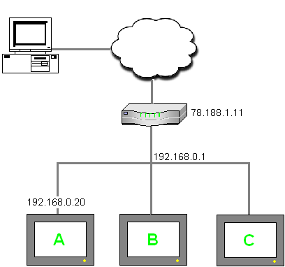

|
|
|
|
|
|
|
|
Vijeo Designer can download projects through a router. Vijeo Designer Runtime Installer can download Vijeo Designer Runtime through a router. This section describes an example of downloading a Vijeo Designer project through a router. The example below can also apply to downloading Vijeo Designer Runtime to a target machine using the Vijeo Designer Runtime Installer. For procedures on downloading Vijeo Designer projects, see Section 25.6.1.1, Downloading over Ethernet. For procedures on downloading Vijeo Designer Runtime using the Vijeo Designer Runtime Installer, see section 25.5, Installing Vijeo Designer Runtime.

The Router must have the following port forwarding rules:
The port on the router configured for the Control Port must forward to target machine port 6001.
The port on the router configured for the Data Port must forward to target machine port 13777.
No filters or firewalls can be in place to prevent network traffic between the Vijeo Designer PC and the target machine.
For security, we recommend using an VPN router rather than a port forwarding router.
This feature should not be used over an unsecured network; however, If this feature is used over an unsecured network, leave the port forwarding active for as short as time as possible so that unauthorized users cannot gain access to the target.
The example below shows a project downloaded through a router to a Target (Target A):
|
Download Property Settings |
Router Port Forwarding Rules |
|
Download: Ethernet IPAddress: 192.168.0.20 SubnetMask: 255.255.248.0 DefaultGateway: 192.168.0.1 Use NAT: Enabled Connect Via: 78.188.1.11 Control Port: 6021 Data Port: 15797 |
78.188.1.11:6021 => 192.168.0.20:6001 78.188.1.11:15797 => 192.168.0.20:1377 |
